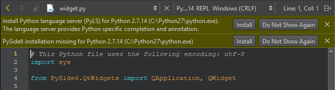
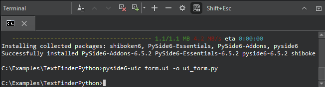
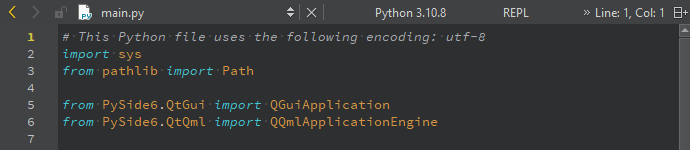
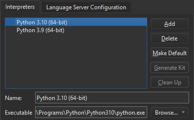
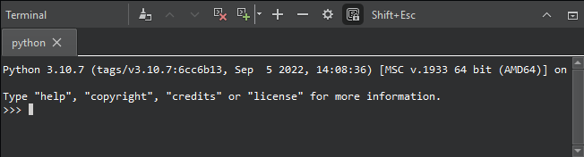

Develop Qt for Python applications
With Qt for Python, you can use Qt 6 API in Python applications. Use the PySide6 modules to gain access to individual Qt modules, such as Qt Core, Qt GUI, and Qt Widgets.
The following sections describe using Qt Creator for developing with Qt for Python:
- Set up PySide6
- Create Qt for Python applications
- Select the Python version
- Create kits for Python
- Use Python interactive shell
- Configure Python language servers
- Run Python applications
- Python Run Settings
- PDB
- Launching the Debugger
For more information about developing with Qt for Python, including limitations, see Qt for Python.
Set up PySide6
If you have not installed the required version of PySide6, Qt Creator prompts you to do so when you open a .py file.

Further, Qt Creator prompts you to install the Python language server that offers services such as code completion and annotations. Select Install to install PySide6 and the language server.
Create Qt for Python applications
Use wizards to create Qt for Python application projects. The wizards generate a project file, .pyproject, that lists the files in the Python project. They also generate a .py file that has some boilerplate code and reguirements.txt that stores the PySide version of the generated code. In addition, the widget-based UI wizard creates a .ui file that has a Qt Designer form, and the Qt Quick Application wizard creates a .qml file that imports Qt Quick controls.
Note: Before importing UI classes and after editing them, create the Python code from your UI form. In PySide6, run pyside6-uic form.ui -o ui_form.py in the Terminal view.

The Window wizard adds code to the source file, without the UI file.
The Empty wizard adds code to the source file, but it does not add any classes, so you need to add and instantiate them yourself.
The .pyproject files are JSON-based configuration files that replace the previously used .pyqtc configuration files. You can still open and use .pyqtc files, but we recommend that you choose .pyproject files for new projects.
Select the Python version
The kits you select for the project in Projects > Build & Run set the Python version to use.
The Edit mode toolbar shows the current Python version.

To use another Python version, activate another kit for the project.
Create kits for Python
Qt Creator automatically adds all Python versions it can find to the list of Python versions in Preferences > Python > Interpreters. It generates kits for the global Python versions that are not inside a virtual environment.

You can add and remove Python versions and clean up references to Python versions that you uninstalled, but that still appear in the list.
To use the selected Python version when opening .py files that don't belong to a project, select Make Default.
To use a virtual environment as a kit, select it in Interpreters, and then select Generate Kit.
Use Python interactive shell
You can write Python code in the Edit mode. Select REPL on the toolbar to start the Python interactive shell in the Terminal view.

To start the shell and import the current file as a module, select REPL Import File. To also import all functions from the file, select REPL Import *.
See also Creating a Qt for Python Application with Qt Widgets, Creating a Qt for Python Application with Qt Quick, and Activate kits for a project.